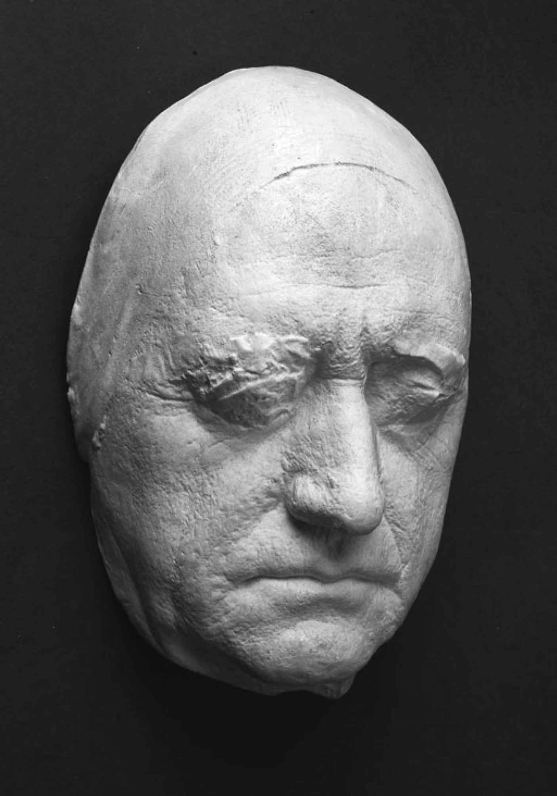

德国民族主义的历程和特点很大程度上是由拿破仑决定的。通过用一连串名义上独立自主的附庸国取代神圣罗马帝国，他剥夺了德国人数百年来拥有的联邦身份。在1806年打败耶拿和奥埃尔斯特的普鲁士军队后，他决定（后来后悔了）不去压制普鲁士王国，这实质上保证了普鲁士将成为任何定义新联盟的努力的焦点，至少是在新教徒中。普鲁士战败后决心自我改革，这表明它已经对自己的政治和文化中心产生了新认识：1810年在威廉·冯·洪堡的倡导下建立的柏林大学由费希特担任校长，柏林大学显然力求接替耶拿大学成为一所全德国的大学（黑格尔和谢林最终也在那里教课），然而它在首都的地理位置（当时在德国是独一无二的）宣告了思想的生命从此完全融入中央主权国家的生活。
在文学中，从耶拿时代的世界性唯心主义向承认民族国家的决定作用的过渡可以从一个孤独天才的工作中找到踪迹。海因里希·冯·克莱斯特（1777—1811）出身自一个杰出的普鲁士军人家庭，在哲学和文学领域自学成才。他渴望逃脱成为一名士兵的命运，试图以作家和记者的身份谋生。他独自沉湎于康德，但对康德之后的发展一无所知，康德的批判性问题比建设性答案更多地影响了他，他在戏剧和小说中对席勒的成熟作品所依据的道德心理学发起了猛烈抨击。例如，他的悲剧《彭忒西勒亚》（1808）展现了一个完全缺乏温克尔曼所称颂的高贵和冷静的希腊；他的神秘故事《O侯爵夫人》（1808）的女主人公试图用席勒的方式公然藐视世界，依靠自我认知的确定性来生活，不料却发现自我难免有误。克莱斯特的后期作品，比如小说《决斗》（1811）和戏剧《洪堡亲王》（1809—1810），开始提出一条摆脱困境的出路：在遭受了克莱斯特笔下早期人物一样的崩溃之后，洪堡亲王承认一个人的身份取决于他所从属的人类社会，对他来说是萌芽状态的普鲁士，从而恢复了自己的身份。可是，这新的洞察来得太迟，救不了克莱斯特。他无法靠写作谋生，被迫向官方乞求任意一个职位，最后和一个患有不治之症的女人约好一同结束生命。
小宫廷的观念论文学文化在神圣罗马帝国的最后几年里硕果累累，然而，除了克莱斯特，19世纪早期的普鲁士作家难以与其建立任何统一的连续性。不幸的是，“浪漫文学”这个概念既指弗里德里希·施莱格尔、谢林和诺瓦利斯的作品（关联了阐述“艺术”、宗教和国家思想的新主体主义哲学），也指旨在逃避的普鲁士文学（反映了君主制下被压迫的资产阶级状况），它实际上是新兴知识分子在商业化的娱乐文学潮流中的结局。（1770至1840年间，德国人口的成人识字率从15%上升到50%；到1800年左右，世俗文学的新书目数量达到大众神学的四倍，颠覆了一直持续到18世纪中叶的历史性比例关系。）约翰·路德维希·蒂克（1773—1853）是一位发现了古老帝国魅力的柏林人，在耶拿的全盛时期居住在那里，编辑诺瓦利斯的文学遗产，继让·保罗之后成为德国第一批全职作家之一，却并非一个单纯以量取胜的作家。他是一只文学寒鸦，挪用任何在没有欣赏其价值的情况下就可用于出售的时髦东西—例如他的《弗兰茨·施特恩巴尔德的漫游》（1798）在模仿《威廉·迈斯特的学习时代》的同时剥除了使歌德的小说既意义重大又难以接近的对个体身份的分析。恩斯特·特奥多尔·阿马多伊斯·霍夫曼（1776—1822）则是一位更有才华的天才，一位天才音乐家，一位职位很高的法官，也是让·保罗的真正门徒。他夸大了笔下主人公身上现实与幻想的反差，并更加明确地表现了被限制的资产阶级和被德国承认其新文化主张的自由流动的知识分子之间的差异［《雄猫穆尔的生活观》（1820—1822）］。然而，他与蒂克幻想中的噩梦元素依然暗示着资产阶级对号称理性的官僚主义政治秩序有着根深蒂固的敌意［《沙人》（1815）］。约瑟夫·冯·艾兴多夫（1788—1857）在天主教信仰的驱使下切断了与一向被新教盘踞的魏玛和耶拿审美理想主义的联系，从西里西亚的家乡流亡，来到柏林做了一名公务员。他把一种相似的疏离感变成当时仍广泛传诵的悠扬的怀旧诗歌，歌咏歌德式的风景—小山、树林、温暖的夏夜月光。只是在其中，客观距离的魅力取代了歌德强调的永远存在和不断变化的自我。
费希特找到了一种方法，把耶拿的主观性哲学和在民族国家的新观念下定义德国人生活的政治要求相联系，从而使一个统一的德国表现得像是知识分子的必需品。1807至1808年间，他在仍被法军驻守的柏林发表了一系列《告德意志民族书》，宣称既然观念论哲学诞生在德国，它必然在欧洲历史上赋予了德国独一无二的地位，并呼吁德国人认同自己的这一历史使命，认同作为其表现形式的国家。在耶拿，观念金字塔的顶点被艺术占领；而在柏林，则被国家的历史生活占据。对德国历史的新一波狂热席卷了德国知识界，但与狂飙突进年代的历史转折不同，它的动力不是去搜寻专制主义之前的文化资源，而是去寻找可以用来对抗法国占领者的民族性。它比上一代的运动更加强调逃避现实、目的明确，而且主要不是指向16世纪（诸侯联盟帝国还比较强大，资产阶级正在上升），而是指向更早的中世纪（骑士和虔信的神话掩盖了军事和国家的力量，回避对经济现实做出回应）。普鲁士人路德维希·阿希姆·冯·阿尔尼姆（1781—1831）与来自法兰克福的克莱门斯·布伦塔诺（1778—1842）联手（后者是与歌德早年擦出过爱情火花的女子的后代，他的妹妹最后嫁给了阿尔尼姆），像歌德和赫尔德曾做过的那样，收集（主要是西南部的）德国民歌。但是，他们大获成功的诗集《男童的奇异号角》（1806—1808）的怀旧情调泄露了这是一个过去或未来的德国的声音，而非当前的现实。不过，严肃的中世纪文献学研究已经开始兴起；1807年，柏林大学一位未来的德国文学教授翻译了《尼伯龙根之歌》；学者雅各布·格林（1785—1863）和威廉·格林（1786—1859）收集了黑森地区的“童话”故事，并着手编纂第一部德语语言历史词典（这部词典历时一百多年才完成）。正如费希特所设想的，大学成为民族主义政治化形式的焦点，而学生（和没有其他文学价值的大学生诗人）在志愿者中相当抢眼，这些志愿者们是法国革命初期人民军队的历史翻版，身着黑、红、金三色制服，帮忙赶走了1812至1814年间“解放战争”中的侵略者。
不过无论如何，德国的邦国联盟传统仍然具有文化上的重要性。在普鲁士朝着民族国家的官僚模式发展，奥地利把目光转向南方和东方的同时，面积较小的德国领地保留了旧帝国的某些精神：它的世界主义，以及它对文学界和知识界高于地方政治单位的信仰。黑格尔尽管经常被曲解为普鲁士民族主义者，但是从1815年至颁布《卡尔斯巴德决议》的1819年，他在君主立宪政体中看到了似乎预示着德国未来的政治生活模式。在他的成熟时期，他认为当代德国是一个由相互联系的主权国家组成的结构，而不是甚至不可能是一个单一的政体。他对世界历史所怀有的百科全书式的兴趣能够帮助他在德国宫廷和大学里晋升，这种好奇心不受任何帝国主义设计的影响，一心想了解通过新帝国的扩张而向欧洲开放的更广大的世界。威廉·冯·洪堡和施莱格尔兄弟成为古代印度语言方面的专家，而亚历山大·冯·洪堡在美洲探索多年之后，开始把世界视为一个单一的生物系统（《宇宙》，1845—1862）。一些因改宗天主教而完全摆脱了官方观念论文化的知识分子显示了想要超越初期民族主义的另一种诉求：弗里德里希·施莱格尔在1808年皈依天主教；成功的剧作家扎哈里亚斯·维尔纳（1768—1823）曾被歌德视作席勒在魏玛的候选接任者，也在维也纳作为神父终结了一生。
歌德在这片混水中坚持自己的航道。席勒离世和耶拿之战几乎导致魏玛公国灭亡，对歌德来说也是具有决定性意义的创伤事件。与维尔纳进行实验之后，他采取了反对“浪漫主义”，尤其是反对浪漫主义宗教虔信的公开立场。他复杂又微妙的小说《亲和力》（1809）取材于施莱格尔兄弟职业生涯中的一段插曲，故事围绕不可靠叙述者机制的一个绝佳范例，背景设置在乡间别墅和绿地，它们的象征含义逐步显现。小说表明了浪漫主义态度对四个当代人生活和情感的悲剧性的破坏作用。歌德还发现，与同时代的很多德国人相比，他更容易接受拿破仑的统治。在他看来，拿破仑似乎是神圣罗马帝国皇帝的一个几近合法的继承人，也是坚定而理性的政府启蒙主义传统的延续者。在拿破仑帝国的后期，他对自己和公众感到十分放心，开始撰写一部全面的自传，这部自传被公认为具有误导性。《自传：诗与真》（1811—1833）中所述的文学生涯大部分属于过去。然而，拿破仑倒台的动荡以及复辟时期的保守和教会氛围再次孤立了他。他在想象中遁入怀疑、非基督教、酒醺和肉欲放松氛围的中世纪伊朗时，新一轮的创作活力爆发。诗集《西东合集》（1819）是他与波斯诗人哈菲兹穿越几个世纪的非凡对话，当时的欣赏者寥寥无几—黑格尔是其中之一，但它预示了持续大半个19世纪的诗歌中的东方化潮流。在生命最后三分之一的时间里，歌德明确地将出版作为自己活动的焦点，并全力推出了全集的三个日渐重要的版本。最后一个版本旨在确保家庭未来的财务状况，他获得了所有德语地区有效版权的首次授予权：德国终于成为一个统一的国家，即使只是在文学领域。但是歌德并没有被民族主义热情撼动，而是对这个民族国家，特别是普鲁士抱持怀疑。他认为自己是为志同道合的人写作，无论他们身在何方。渐渐地，他认为自己是为未来写作，生前没有出版毕生之作《浮士德》的第二部分。《浮士德—第二部》（1832）是歌德在他所经历的时代的最后言辞，充满诗意和象征性地展示了旧制度 [12] 最后几年的暴政和挫败，观念论伟大时代里堂吉诃德式的文化追求（浮士德与特洛伊的海伦的短暂婚姻象征了这一点），革命和战争中的暴力冲突，以及后拿破仑时代里资本、工业、帝国和毫不掩饰的国家权力的推进。经历这一切的浮士德一路前进，他宿命的赌局如今几乎象征了现代性的道德矛盾，其破坏性和创造性同等强大。相应地，歌德对浮士德的最终判决也是模棱两可的，徘徊于梅菲斯托做出的毁灭却现实的判罪和天国主人做出的胜利却讽刺的希望表达之间：这对后来重新审视这部戏剧和自身的我们是一个永久的挑战。

图8 歌德58岁时的面部模型（1807）—这是他距离我们最近时期的图片